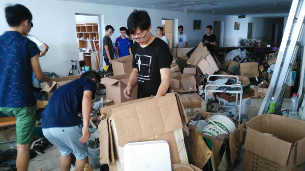

2017年7月17日上午9时，为配合学校校区调整与整体规划要求，位于广中路805号校外G3楼10的上海大学自强队实验室（含上海大学自强队智能车组临时场地）开始动工搬迁入驻至延长校区M8楼206、208、210等7间学生宿舍。
本次实验室搬迁在上海大学自强队临时党支部书记叶立俊的带领和上海大学自强队指导教师黄慎之、陈万米老师的监督和关心下顺利进行，参加本次实验室搬迁的还有来自上海大学自强队的研究生及本科生同学20余名。参加本次搬迁过程的同学们大都是自愿报名，他们发扬了上海大学自强队自强不息，互帮互助的精神，顶着酷暑高温协助搬厂公司的员工快速高效地将搬运现场整理清扫，将M8楼的部分宿舍合理分配，完成了自强队实验室的整体搬迁工作。
此外，此次搬迁还得到了上海大学校办顾瑛老师的大力支持和理解，经努力，上海大学自强队篮球队临时在已废弃的延长校区二食堂租借了约150（20*8）的实验场地用于暑期比赛的备战和调试。 
上海大学自强队
2017年7月18日